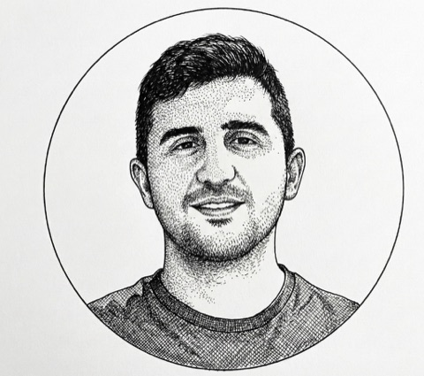

Political Science Ph.D. Student
UNC-Chapel Hill
I am a Ph.D. student in the Department of Political Science at the University of North Carolina at Chapel Hill. Before starting my Ph.D., I worked as a project assistant at the International Centre for Migration Policy Development. I hold an M.A. in Political Science from Central European University and a B.A. in International Relations from Bilkent University.
I work at the intersection of international relations and comparative politics. My research examines how domestic politics shapes international outcomes, with a focus on sovereign finance and political regimes. You can find my CV here.
Governments accused of electoral misconduct often push back against the credibility of election observation missions (EOMs). When do these efforts succeed? This paper investigates the strategies governments use to contest critical EOM findings and their effectiveness in shaping perceptions of electoral integrity. We focus on two prominent contestation strategies: direct attacks on observer credibility and appeals to politically compliant "zombie" monitors that rubber-stamp elections. We test the effects of these strategies among two key audiences for EOMs: domestic citizens and foreign government elites. In a vignette experiment among Kenyan citizens, respondents evaluate a disputed Kenyan election in light of a critical EOM report and a randomly assigned government rebuttal. In a second experiment, U.S. foreign policy professionals participate in a simulated interagency deliberation over the contested Kenyan election. We find that critical EOM reports substantially reduce perceptions of election integrity among both Kenyan respondents and US policy officials. While government rebuttals fail to persuade Kenyan citizens, they increase perceived election integrity and diminish punitive responses such as aid suspension among US elites. Our findings suggest that credible monitors retain significant power to shape perceptions of election quality, but that this influence is vulnerable to government contestation among foreign elites.
What happens to religious terrorist organizations when states guarantee widespread religious freedoms? Prior research has traced the roots of religious terrorism to relative deprivation and religious favoritism, yet the role of broad religious freedoms has received little attention. I argue that religious terrorist groups decline where countries protect such freedoms. Guaranteeing the right to practice one’s faith, I contend, equips states to resist religious terrorism through two mechanisms: it defuses the grievances that drive marginalized minorities toward violence, and, by extending equal treatment before the law, it constrains dominant religious groups from repressing minorities with impunity. Rather than a mere absence of repression, I treat religious freedom as a positive institutional arrangement that limits the state’s reach into the religious sphere. Drawing on a range of cross-national data sources and estimation strategies, including models that exploit within-country changes in religious freedom over time, I assess how these protections shape the presence and behavior of religious terrorist organizations. The findings indicate that states with widespread religious freedoms host fewer such organizations than states with severe restrictions, and that these groups, where present, carry out fewer domestic attacks. The study reframes religious freedom as a stabilizing institution that affords states a comparative advantage against religious terrorism.
Why do some states extend more credit to certain borrowers than to others? I argue that political regime type is a key determinant of official bilateral lending. Compared to their democratic counterparts, autocratic governments face stronger incentives to borrow externally, driven by high exit costs from office and weak institutional constraints on borrowing. However, they face a restricted credit supply as democracies favor fellow democratic borrowers and anticipate domestic backlash against lending public resources to authoritarian regimes. Nonetheless, autocratic creditors can step in to meet this heightened demand, either to contain spillover effects, to assist a like-minded regime, or to extract greater concessions. Accordingly, I expect autocracy–autocracy dyads to have significantly higher bilateral debt flows than other regime-type pairings, and I predict that this effect intensifies during domestic crises in autocratic borrower countries. The empirical results support my hypotheses. Autocracies receive more lending from fellow autocracies, and this lending increases when the borrower experiences a domestic crisis. The regime-type effect is robust to excluding China as a creditor country. These findings illuminate an underexplored political dimension of sovereign finance, with implications for understanding authoritarian resilience and democratic backsliding.